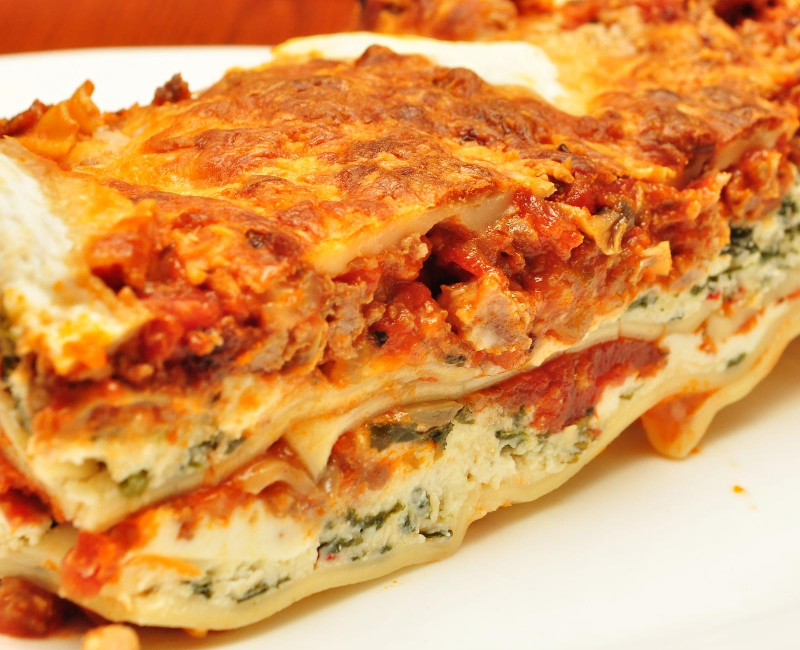

Home
Lasagna

Description
A traditional Italian lasagna recipe.
Ingredients
For the Ragu alla Bolognese
- 2 tbsp olive oil
- 4 oz pancetta, finely dices
- 1 large yellow onion, finely chopped
- 2 carrots, finely chopped
- 2 celery stalks, finely chopped
- 1 lb 85/15 ground beef
- 1 lb ground pork
- 1 cup whole milk
- 1 cup Pinot Grigio
- 1 28oz can of San Marzano crushed tomatoes
- 1 tsp Kosher salt
- 1/2 tsp black pepper
- A pinch of freshly grated nutmeg
For the Besciamella
- 6 tbsp unsalted butter
- 1/2 cup all-purpose floud
- 4 cups whole milk, warmed
- 1/2 tsp kosher salt
- 1/4 tsp freshly grated nutmeg
For assembly
- 1 lb fresh lagagna noodles
- 2 cups Parmigiano-Reggiano, freshly grated
Steps
- Start the Ragù (The Soul of the Lasagna): In a large Dutch oven or heavy-bottomed pot, heat the olive oil over medium heat. Add the pancetta and cook until crisp, about 5-7 minutes. Add the onion, carrot, and celery (the soffritto). Cook, stirring occasionally, until softened and translucent, about 10-12 minutes.
- Brown the Meat: Increase the heat to medium-high, add the ground beef and pork. Break it up with a spoon and cook until browned all over. Season with salt and pepper. Drain off any excess fat.
- The Flavor Layers: Pour in the whole milk. Let it simmer, stirring, until it has almost completely evaporated; this tenderizes the meat. Scrape up any browned bits from the bottom of the pot. Add the white wine and let it bubble until mostly evaporated. Stir in the crushed tomatoes, a pinch of nutmeg, and more seasoning. Bring to a gentle simmer, then cover partially and cook on low for 2-3 hours, stirring occasionally, until the sauce is thick and incredibly flavorful.
- Whip Up the Béchamel: While the ragù simmers, melt the butter in a saucepan over medium heat. Whisk in the flour to make a roux; cook for 1-2 minutes without letting it brown. Slowly pour in the warm milk while whisking constantly to avoid lumps. Continue to cook, whisking, until the sauce thickens enough to coat the back of a spoon. Season with salt, pepper, and nutmeg. Set aside.
- Prep Your Pasta: If using dried noodles, boil them according to package directions, but undercook them slightly. If using fresh sheets, blanch them briefly in salted boiling water if needed. If using no-boil noodles, you're ready to go.
- Assemble the Lasagna: Preheat your oven to 375°F (190°C). Spread a thin layer of ragù on the bottom of a 9x13 inch (or similar) baking dish. Layer with pasta sheets, then top with a layer of ragù, a layer of béchamel, and a generous sprinkling of Parmigiano-Reggiano. Repeat these layers until all ingredients are used, finishing with a layer of pasta topped with béchamel, a little ragù, and a final generous sprinkling of Parmigiano.
- Bake and Rest: Bake for about 45 minutes, or until the edges are browned and the sauce is bubbling. Allow the lasagna to stand for at least 10 minutes before serving so the layers can set. Enjoy!